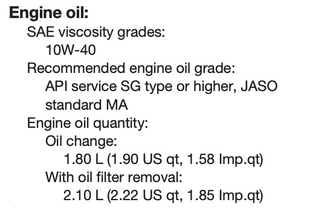

1st Service and Engine Break-In
Based on the manual, the first service is required either of the conditions met - 1st 1000km or completed one month after receiving the motorcycle. As for my case, it is the latter. My current mileage is 685km for the first month.
I went to the YQS - Boon Hua Motor Sdn Bhd for my first service, and I am very happy with their customer service who helped me with the process. I will review this service center again soon after engaging them a few more times.

Blue One has its engine oil and oil filter changed. On top of that, the mechanic also checked my rear brake and found out that there’s sand between the brake pad which produces the squeking noise.
Besides that, I also took this opportunity to get my brake hose routing as there is an official notification from Hong Leong Yamaha Motor. The mechanic explained that Hong Leong Yamaha Motor noticed that the ABS supplier had supplied them with a faulty item, hence they announced the notification to all the R25 and MT-25 owners to have the motorcycle checked in the official dealer or YQS center.
Engine Break-In
I am still in the midst of engine break-in period and I still 1000km more to go in order to operate the bike to it’s potential. Below is the exerpt from the user manual: